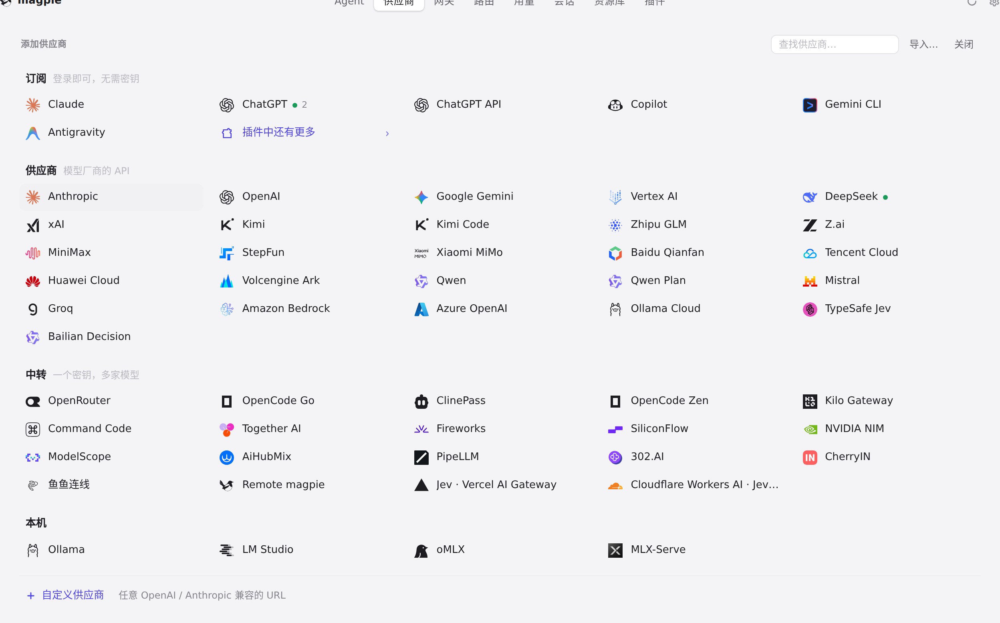
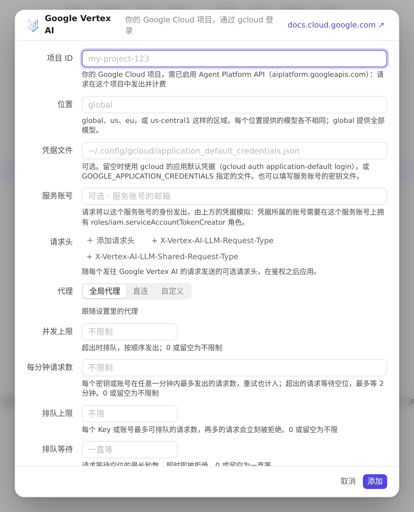
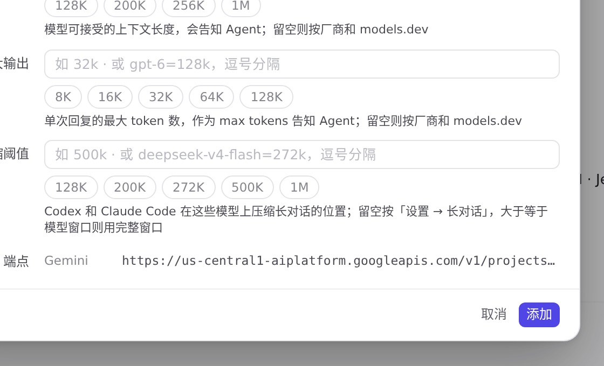
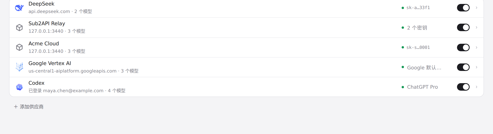
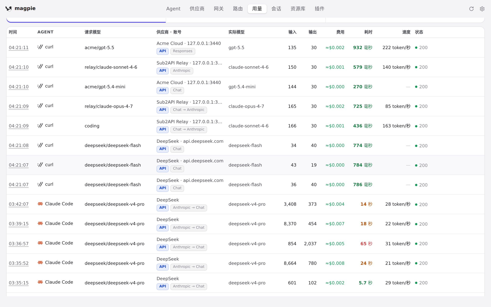

#1122 界面预览
commit 4cbb1b7 · 回到 PR · 新增 Google Vertex AI 预设：供应商编辑器用「项目 ID / 位置 / 凭据文件 / 服务账号」取代 API 密钥，未填项目 ID 时拒绝保存，端点按项目与位置实时拼出地址，列表行上的标记改为说明用哪个 Google 凭据（服务账号、凭据文件或默认凭据，无项目时写「需要项目」）；「用量 → 请求」的协议标记也把 generateContent 大小写通吃，让 Gemini/Vertex 的请求标为 Gemini。
红线是鼠标走过的轨迹，红色圆环是一次点击；底部文字是这一步在做什么。空格暂停，← → 逐段查看。

供应商：Google Vertex AI 预设与编辑器 · 添加面板中的预设列表

供应商：Google Vertex AI 预设与编辑器 · Google Vertex AI 的编辑器：项目 ID、位置、凭据文件、服务账号
 供应商：Google Vertex AI 预设与编辑器 · 未填项目 ID 时点击「添加」后的编辑器
供应商：Google Vertex AI 预设与编辑器 · 未填项目 ID 时点击「添加」后的编辑器

供应商：Google Vertex AI 预设与编辑器 · 填好项目与位置后「端点」显示的一行

供应商：Google Vertex AI 预设与编辑器 · 列表里的 Google Vertex AI 行

用量：请求列表的协议标记 · 请求列表里每条请求的协议标记一列